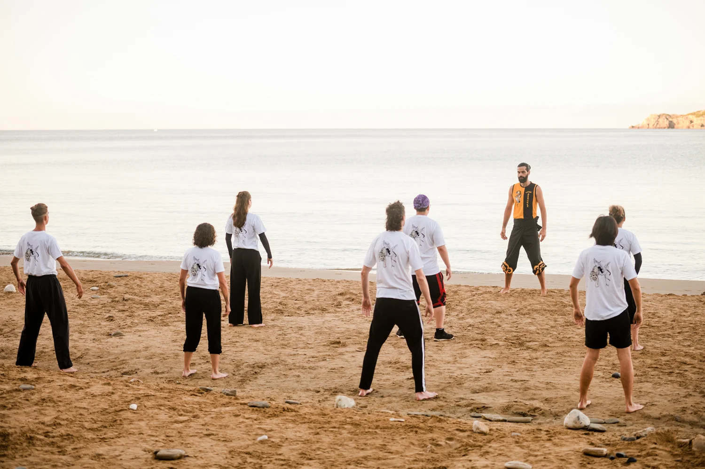
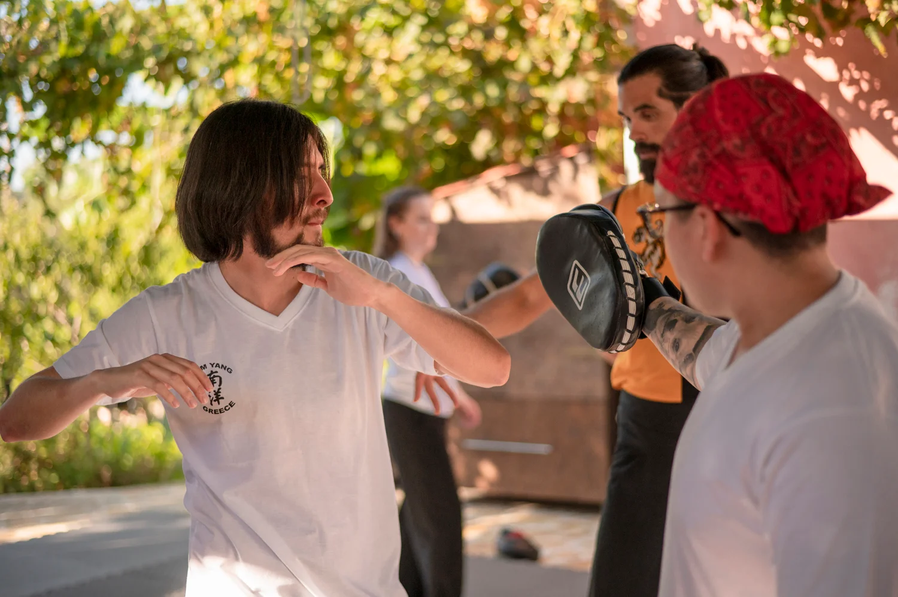
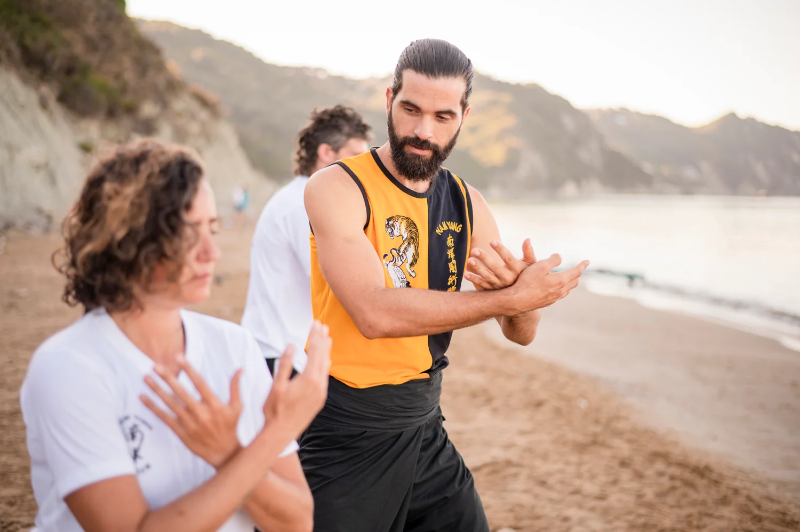
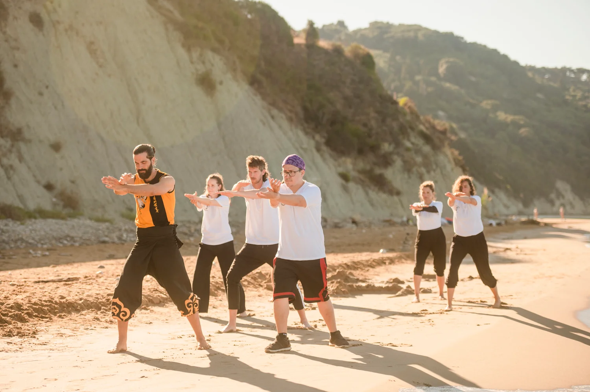

July Retreat
Traditional Kung Fu & Chi Kung retreat in Corfu.

Authentic retreats, workshops and private training rooted in the Nam Yang tradition.

People come to Corfu for many reasons. Some are looking to begin a martial arts journey, others want to deepen an existing practice or spend time training in a beautiful natural environment.
What many discover is that the experience extends beyond the training itself. Shared practice, conversations over tea, time in nature and the camaraderie that develops throughout the week create an atmosphere that keeps people coming back year after year.

I began by learning movements and forms, but over time I realised the value of the practice wasn’t in reaching a destination—it was in continuing the journey of improvement, one step at a time. What first attracted me to Kung Fu was the physical training. What kept me practising was the depth I discovered beneath it.
As an instructor, my goal is to help each student progress at their own pace. Whether you’re completely new to martial arts or have years of experience, you’ll receive personal guidance, thoughtful feedback and the right balance of challenge and support.
The teachings I share come from the Nam Yang tradition, a system that combines hard and soft training, external skill and inner development. It is an approach that continues to shape both my practice and the way I teach today.
Read My Story
Traditional Kung Fu & Chi Kung retreat in Corfu.

Extended immersion retreat with deeper training and community.
People often arrive for the training.
They return for the people.
Nestled on the northwest coast of Corfu, Arillas is known for its beautiful beaches, relaxed pace of life, and welcoming international community. Between training sessions, students explore the coastline, share meals, watch the sunset over the Ionian Sea, and enjoy everything the village has to offer.
What begins as a week of practice often becomes lasting friendships and a connection to a place many students return to year after year.
“A perfect blend—active and relaxing, an extraordinary combination of physical and mental practice in a natural environment. In only one week, I could feel a change in my body, mind and health.”
“The location is amazing. Starting the day with Qi Gong overlooking the sea and continuing training in a peaceful environment was unforgettable. Thomas was calm, patient and adapted the pace to different skill levels. I can definitely recommend the experience.”
“What I appreciated most about the retreat was the personal approach and genuine attention given to each individual. Thomas has a unique way of teaching Kung Fu—not just as a martial art, but as a way of life. The way he shares his knowledge sparks a deep curiosity and leaves you wanting to dive deeper. I left the retreat inspired and motivated to continue the journey.”
The training taught at Nam Yang Greece comes from a traditional Shaolin lineage that balances hard and soft practice, external skill and internal development.
Students train traditional Kung Fu alongside Chi Kung, meditation and partner work, creating an approach that develops strength, awareness and character together.
Founded by Master Ang Lian Huat and passed on through generations of dedicated instructors, the Nam Yang tradition continues to preserve practical martial skill while encouraging lifelong personal development.
It is this balance that first drew Thomas to the system and continues to shape the way he teaches today.

Traditional Shaolin Kung Fu. Chi Kung. Good company. Beautiful surroundings.
Join us in Corfu and experience the Nam Yang tradition for yourself.

.webp)
.webp)